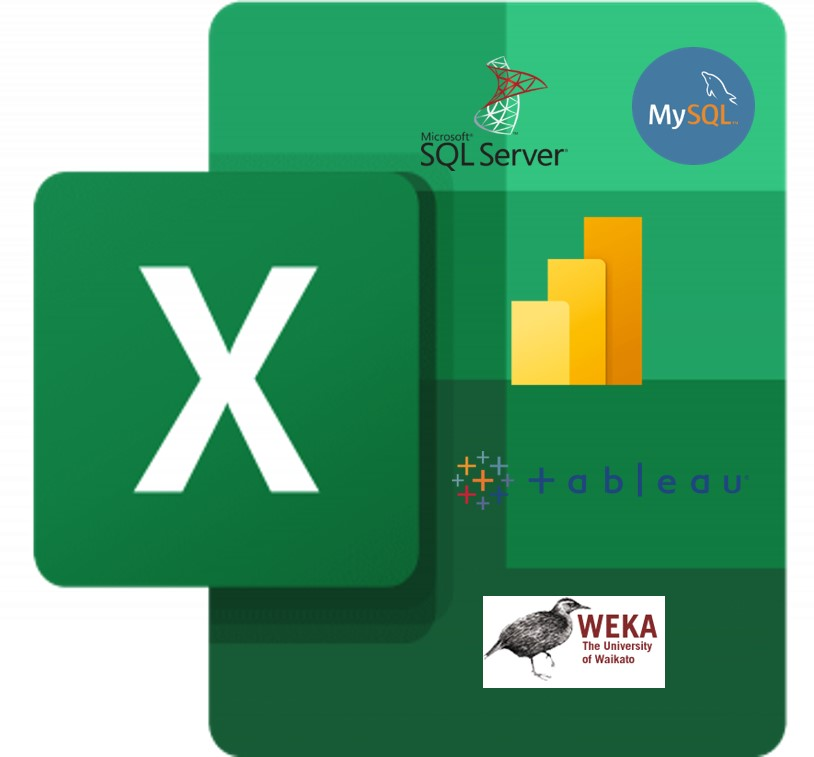
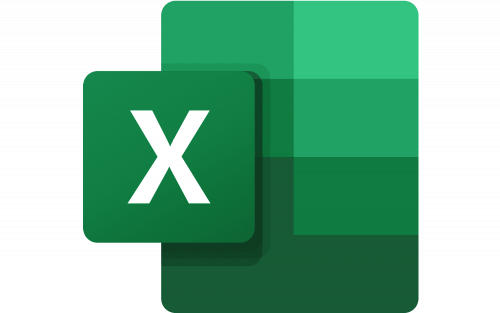

The right decisions come from the right insights and right reports. Clarity is king. Whether you have been successfully doing reporting for years, or are starting from scratch, OceanWave can make reporting effortless and provide high quality results, allowing you to focus on the key information you need to make key business decisions. Whether it’s simple onetime reports, ongoing reporting, or a full enterprise reporting solution, reporting analytics, OceanWave has you covered.

These featured projects is a combination of personal and real life (hand-on projects). In these Projects, I have showcased my proficiency in each of the above mentioned data analytics tools. I have used each of the tools individually and combined to carry out data analysis and visualization on my own use cases and real life projects.


Dataset cleaning and Visualization (Dashboard) of State wide (California) COVID Data using Microsoft Excel google sheet.

Dataset cleaning using Microsoft Excel and/or Power Query and Visualization using Mcrosoft Power BI

In this project, we clean data using Microsoft Excel and Visualize Using Microsoft Power BI

Visualization of different public datasets using Tableau.

Data exploration in MYSQL Server/Visualization in Microsoft Power BI.
Data exploration in MSQL Server/Visualization in Microsoft Power BI.
Organisation Name: Lagos State Signage & Advertisement Agency
Project Name: Debt Recovery & Bill Roll Out Projects
Project's Brief Description: A project that involves getting data from 4 different departments. These data are being manipulated (using advanced excel) in order to synchronize the company’s records and find out debtors’ records. We use the resulting data to prepare the current year’s bill and generate revenue for the organisation.
Durations:
1. 2015 (3 Months: June - September, 2015): Led a team of 5 members in 3rd and 1st Party Clients' Accounts Reconciliation project (Across Lagos State) that led to N1.1bn in revenue generation.
2. 2014 (3 Months: March - May, 2014): Led a team of 5 members in 1st Party Clients' Accounts Reconciliation project across Lagos State to facilitate 2014 bill roll out that led to N700m in revenue generation.
3. 2013 (3 Months: March - May, 2013): Led a team of 5 members in 1st Party Clients' Accounts Reconciliation project across Lagos State to facilitate 2014 bill roll out that led to N700m in revenue generation.
Tools Used: Advanced Microsoft Excel, Microsoft Word and Microsoft Powerpoint

Organisation Name: Best Practices Limted
Project Name: IVMS Project (In-Vehicle Monitoring System) & MIX Vision AI deployment for Lafarge Holcim (Nigeria), Total Nigeria Plc., OVH (OANDO), Baker Hughes, etc
Project Duration: 2018 to Date.
Project's Brief Description: A project that involves the Installation, Monitoring and Maintenance of Mix Telematics Fleet Management Devices (In-Vehicle Monitoring System (IVMS)) and MIX AI Cameras to promote Safety, Fleet Efficiency, Cost Reduction, Driver Compliance, and Security through Fleet Information Analysis (Data Analysis).
Our Role: As a Consultant, our primary role is to perform Fleet Information Analysis and Advisory Services by carrying out Statistical and Data Analytics processes utilizing Fleet Data, minding the KPI’s and Business Metrics while developing and deploying valuable and insightful Dashboards and giving feedback to clients to ensure Fleet Safety, Efficiency, Cost Reduction, Driver Compliance and Security, and Revenue & Profit Maximization.
Mode of Work: Physical/Remote (3 Days in the office and 2 days remote @ 8 hours per day/40 hours per week).
Tools Used: Advanced Microsoft Excel, API connection to Mix Telematics Database, Microsoft Power BI and Tableau, Microsoft Teams, and Zoom.